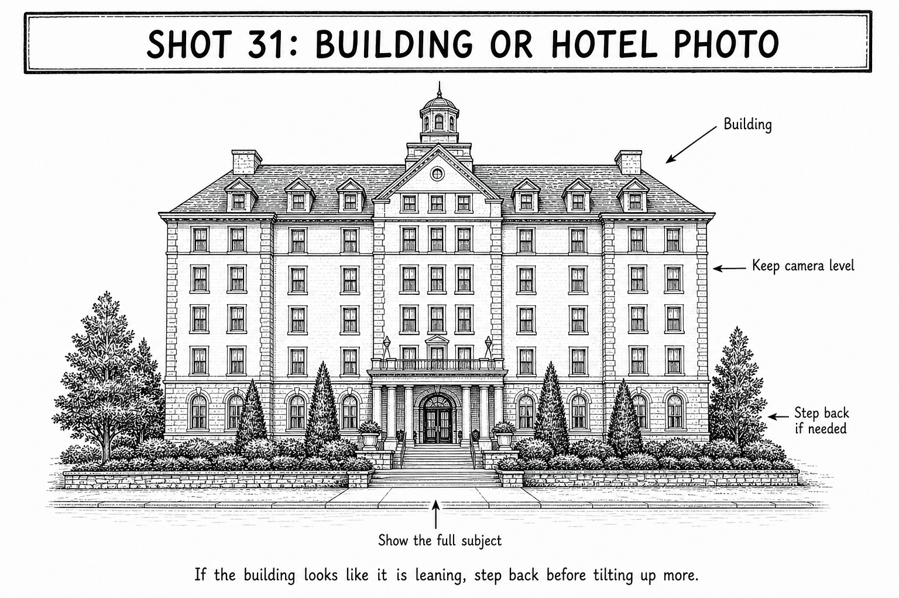

Primary real example
Travel Photography Guru
Travel architecture photographs with clean, upright lines.
Open the original exampleShot 31 | Any day | Trip-wide | Canada
Reference links for this shot.

These examples stay on their original sites. No photographer images are copied into this guide.
Primary real example
Travel architecture photographs with clean, upright lines.
Open the original example